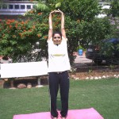

1.) FIVE SPECIAL ASANAS
The five Asanas, which form the core of the practice, are related directly to the 5 alimentary valves. They help to stretch, massage, and relax all parts of the alimentary canal and enhance the cleansing process.
2.) TADASANA (THE STRETCH POSE)

- Stand straight, with feet about 10 cms apart, arms by the sides.
- Breathe in deeply, and raise both hands on the sides of the head, in an upward direction.
- Interlock your fingers – palms facing towards the sky.
- Exhale; place the hands on top of the head.
- Inhale – stretch the arms up over the head and slowly rise up on your toes, stretching and lengthening the abdominal area.
- Hold the position for a few seconds.
- Exhale – bring the heels down on the floor and hands on top of the head.
- This is one round.
- Repeat 8 times. All 8 rounds should take no more than about 40 – 60 seconds.
- Tadasana acts mainly on the stomach and stretches the colon.